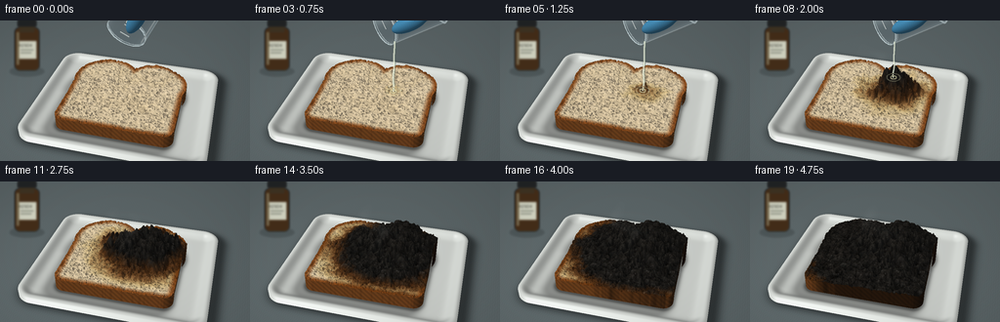
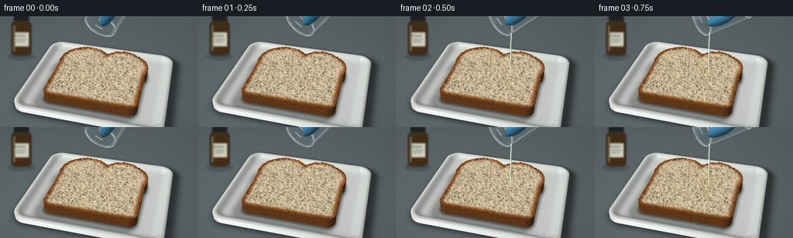

CODING AGENTS AS PIXEL WORLD MODELS
traex/GPT-6.1-Sol · phygen_151
点击播放 · 原生 RGB 像素
逐轮保存的候选
回放视频、检查图与代码变化。
每份候选均可单独播放。实际图片检查记录在下方工具轨迹中。
候选 01播放与检查图
点击播放 · 原生 RGB 像素


展开代码变化
--- 上一保存版本
+++ 本次保存版本
@@ -0,0 +1,552 @@
+"""Procedurally render a laboratory timelapse, using only numpy and Pillow.
+
+All geometry, textures, optical effects and animation are generated here.
+The camera remains locked while the bread dehydrates and carbonizes.
+"""
+from pathlib import Path
+import math
+import numpy as np
+from PIL import Image, ImageDraw, ImageFilter, ImageFont
+from artifact_io import save
+
+ROOT = Path(__file__).resolve().parent
+W, H, SS = 256, 144, 3
+RW, RH = W * SS, H * SS
+rng = np.random.default_rng(15109)
+
+
+def unit(x):
+ x = np.asarray(x, dtype=np.float32)
+ return x / np.linalg.norm(x, axis=-1, keepdims=True).clip(1e-8)
+
+
+EYE = np.array([1.65, -6.4, 5.4], np.float32)
+TARGET = np.array([0., 0.05, .38], np.float32)
+FORWARD = unit(TARGET - EYE)
+RIGHT = unit(np.cross(FORWARD, [0, 0, 1]))
+UP = unit(np.cross(RIGHT, FORWARD))
+FOCAL = RW / (2 * math.tan(math.radians(33 / 2)))
+yy, xx = np.mgrid[:RH, :RW].astype(np.float32)
+RAYS = unit(FORWARD + (xx[..., None] + .5 - RW/2)/FOCAL * RIGHT
+ - (yy[..., None] + .5 - RH/2)/FOCAL * UP).reshape(-1, 3)
+LIGHT = unit([-3.8, -4., 7.])
+
+
+def project(points):
+ p = np.asarray(points) - EYE
+ z = p @ FORWARD
+ return np.stack((RW/2 + FOCAL*(p @ RIGHT)/z,
+ RH/2 - FOCAL*(p @ UP)/z), axis=-1)
+
+
+def roundbox(x, y, bx, by, r):
+ qx, qy = np.abs(x)-bx+r, np.abs(y)-by+r
+ return np.sqrt(np.maximum(qx, 0)**2 + np.maximum(qy, 0)**2) + np.minimum(np.maximum(qx, qy), 0)-r
+
+
+def footprint(x, y):
+ # A bread slice, with squared lower corners and two rounded crown lobes.
+ body = roundbox(x, y+.23, 1.12, .79, .19)
+ left = np.hypot(x+.49, y-.47)-.675
+ right = np.hypot(x-.49, y-.47)-.675
+ return np.minimum(body, np.minimum(left, right))
+
+
+N = 640
+gy, gx = np.mgrid[:N, :N].astype(np.float32)
+TX, TY = gx/(N-1)*3.4-1.7, gy/(N-1)*3.4-1.7
+DIST = footprint(TX, TY)
+
+
+def random_field(radius):
+ im = Image.fromarray(rng.integers(0, 256, (N, N), dtype=np.uint8))
+ a = np.asarray(im.filter(ImageFilter.GaussianBlur(radius)), dtype=np.float32)
+ return (a-a.mean()) / max(a.std(), 1)
+
+
+large = random_field(20)
+medium = random_field(4.5)
+fine = random_field(.7)
+grain = rng.normal(0, 1, (N, N)).astype(np.float32)
+organic = .54*large+.31*medium+.15*fine
+
+# Bake pore geometry into a texture, including a pale rim and shaded interior.
+pore_image = Image.new('L', (N, N), 0)
+pd = ImageDraw.Draw(pore_image)
+for i in range(5400):
+ cx, cy = rng.uniform(0, N, 2)
+ radius = rng.uniform(.7, 2.8) if i < 4400 else rng.uniform(2, 6)
+ ry = radius*rng.uniform(.45, 1.2)
+ pd.ellipse((cx-radius, cy-ry, cx+radius, cy+ry), fill=int(rng.uniform(110, 240)))
+pores = np.asarray(pore_image.filter(ImageFilter.GaussianBlur(.45)), dtype=np.float32)/255
+pore_edge = np.asarray(pore_image.filter(ImageFilter.GaussianBlur(1.6)), dtype=np.float32)/255
+baseheight = .333+.012*large+.006*medium+.002*fine-.030*pores
+
+# Closed, small carbon cells make the late reaction rough and porous, rather
+# than a featureless black painted patch.
+nearest = np.full((N, N), 1e8, np.float32)
+second = nearest.copy()
+for sx, sy in rng.uniform(-1.6, 1.6, (160, 2)):
+ dd = (TX-sx)**2+(TY-sy)**2
+ second = np.minimum(second, np.maximum(nearest, dd))
+ nearest = np.minimum(nearest, dd)
+cracks = np.exp(-(np.sqrt(second)-np.sqrt(nearest))*105)
+charcell = np.exp(-nearest*68)
+
+
+def sample(a, x, y):
+ fx = np.clip((x+1.7)*(N-1)/3.4, 0, N-1.001)
+ fy = np.clip((y+1.7)*(N-1)/3.4, 0, N-1.001)
+ ix, iy = fx.astype(np.int32), fy.astype(np.int32)
+ ax, ay = fx-ix, fy-iy
+ if a.ndim == 3:
+ ax, ay = ax[..., None], ay[..., None]
+ return ((a[iy, ix]*(1-ax)+a[iy, ix+1]*ax)*(1-ay)
+ +(a[iy+1, ix]*(1-ax)+a[iy+1, ix+1]*ax)*ay)
+
+
+def bread_maps(frame):
+ # An advancing reaction front and a subsequent local color change.
+ distance = np.sqrt(((TX-.34)/1.03)**2+((TY-.17)/.96)**2)
+ time = max(0, frame-1.4)
+ stage = np.clip(time*.112-distance*.88+.075*large+.027*medium, 0, 1)
+ stage *= float(frame >= 2)
+ wet = np.clip(stage*5, 0, 1)
+ brown = np.clip((stage-.16)*3.4, 0, 1)
+ carbon = np.clip((stage-.35)*3.6, 0, 1)
+ rise = carbon*np.exp(-distance**2/.78)
+ heights = baseheight + rise*(.35+.08*large+.035*medium+.065*charcell)
+ heights -= .018*cracks*carbon
+ crumb = np.stack((238+4*organic, 216+5*organic, 176+7*organic), -1)
+ crumb -= pores[..., None]*np.array([62, 58, 46])
+ crumb += np.maximum(0, pore_edge-pores)[..., None]*np.array([13, 12, 9])
+ crust_amount = np.clip((DIST+.135)/.095, 0, 1)
+ crust = np.stack((150+13*organic, 85+11*organic, 36+8*organic), -1)
+ crust += np.sin(TX*130+3*medium)[..., None]*2
+ colors = crumb*(1-crust_amount[..., None])+crust*crust_amount[..., None]
+ # Clear liquid first leaves a glossy yellowish wet region.
+ colors *= 1-wet[..., None]*np.array([.055, .09, .22])
+ caramel = np.stack((106+12*organic, 58+8*organic, 21+5*organic), -1)
+ colors = colors*(1-brown[..., None])+caramel*brown[..., None]
+ black = np.stack((29+4*medium+4*charcell, 27+3.7*medium+3*charcell,
+ 24+3.3*medium+2.5*charcell), -1)
+ black -= pores[..., None]*11 + cracks[..., None]*9
+ colors = colors*(1-carbon[..., None])+black*carbon[..., None]
+ # Scorched crust remains recognizable around the carbonized center.
+ dhy, dhx = np.gradient(heights, 3.4/(N-1))
+ normals = unit(np.stack((-dhx, -dhy, np.ones_like(dhx)), -1))
+ return heights.astype(np.float32), np.clip(colors, 0, 255).astype(np.float32), normals, wet, carbon
+
+
+def plate_distance(x, y):
+ return roundbox(x, y-.06, 1.76, 1.48, .34)
+
+
+def plate_height(x, y):
+ d = plate_distance(x, y)
+ return .051+.101*np.exp(-((d+.06)/.125)**2)
+
+
+def trace_surface(rays, heightmap=None, kind='bread'):
+ # Signed distance sphere tracing, restricted to a compact surface bound.
+ top = .96 if kind == 'bread' else .17
+ t = (top-EYE[2])/rays[:, 2]
+ p = EYE+t[:, None]*rays
+ if kind == 'bread':
+ active = (np.abs(p[:, 0]) < 1.8) & (np.abs(p[:, 1]) < 2)
+ else:
+ active = (np.abs(p[:, 0]) < 2.05) & (np.abs(p[:, 1]) < 2.3)
+ indices = np.flatnonzero(active)
+ tt = t[indices].copy()
+ rr = rays[indices]
+ hit = np.zeros(len(indices), bool)
+ live = np.ones(len(indices), bool)
+ for _ in range(88 if kind == 'bread' else 60):
+ ids = np.flatnonzero(live)
+ if not len(ids):
+ break
+ q = EYE+tt[ids, None]*rr[ids]
+ x, y, z = q.T
+ if kind == 'bread':
+ dxy = footprint(x, y)
+ ht = sample(heightmap, x, y)
+ dz = np.maximum(z-ht, .075-z)
+ else:
+ dxy = plate_distance(x, y)
+ dz = np.maximum(z-plate_height(x, y), .012-z)
+ sdf = np.maximum(dxy, dz)
+ good = sdf < .0008
+ hit[ids[good]] = True
+ live[ids[good]] = False
+ bad = (z < -.08) | (tt[ids] > 15)
+ live[ids[bad]] = False
+ tt[ids] += np.maximum(sdf*.52, .00035)
+ all_t = np.full(len(rays), 1e5, np.float32)
+ all_t[indices[hit]] = tt[hit]
+ return all_t
+
+
+def lighting(rgb, normals, view, specular=.08, roughness=35):
+ diffuse = np.maximum(normals @ LIGHT, 0)
+ halfv = unit(LIGHT+view)
+ shine = np.maximum((normals*halfv).sum(-1), 0)**roughness
+ # Warm softbox and a cooler, broad ambient fill.
+ shaded = rgb*(.43+.60*diffuse[..., None])
+ shaded += (1-normals[..., 2:3])*np.array([2.2, 3.7, 5])
+ shaded += np.asarray(specular)[..., None]*shine[..., None]*np.array([225, 227, 230])
+ return shaded
+
+
+def render_static():
+ ground_t = -EYE[2]/RAYS[:, 2]
+ p = EYE+ground_t[:, None]*RAYS
+ x, y = p[:, 0], p[:, 1]
+ texture = (1.0*np.sin(x*149+np.sin(y*49))+.8*np.sin(y*230+x*57)
+ +.5*np.sin(y*71-x*97))
+ ground = np.stack((93+texture, 103+texture, 105+texture), -1)
+ illumination = .94+.12*np.exp(-((x+2)**2+(y+2)**2)/17)
+ ground *= illumination[:, None]
+ # Soft contact shadow under the white porcelain reaction tray.
+ d = plate_distance(x-.08, y-.06)
+ shadow = .48*np.exp(-np.maximum(d, 0)**2/.021)
+ ground *= (1-shadow[:, None])
+ pt = trace_surface(RAYS, kind='plate')
+ visible = pt < ground_t
+ q = EYE+pt[visible, None]*RAYS[visible]
+ xp, yp = q[:, 0], q[:, 1]
+ dhx = (plate_height(xp+.002, yp)-plate_height(xp-.002, yp))/.004
+ dhy = (plate_height(xp, yp+.002)-plate_height(xp, yp-.002))/.004
+ norm = unit(np.stack((-dhx, -dhy, np.ones_like(dhx)), -1))
+ white = np.tile([223., 227., 222.], (len(q), 1))
+ porcelain = lighting(white, norm, -RAYS[visible], .22, 70)
+ # A shadow cast from the bread, plus its stronger contact occlusion.
+ bd = footprint(xp+.12, yp+.13)
+ contact = footprint(xp, yp)
+ sh = .29*np.exp(-np.maximum(bd, 0)**2/.016)
+ sh += .29*np.exp(-np.maximum(contact, 0)**2/.0028)
+ porcelain *= 1-np.clip(sh, 0, .62)[:, None]
+ ground[visible] = porcelain
+ depth = np.minimum(pt, ground_t)
+ # A subtle focus falloff, without any arbitrary movement of the backdrop.
+ frame = ground.reshape(RH, RW, 3)
+ return frame, depth
+
+
+STATIC, STATIC_DEPTH = render_static()
+
+
+def font(size):
+ path = '/usr/share/fonts/truetype/dejavu/DejaVuSans.ttf'
+ try:
+ return ImageFont.truetype(path, size)
+ except OSError:
+ return ImageFont.load_default()
+
+
+def background_props(image):
+ # Out-of-focus amber reagent bottle, unobtrusive at the edge of the bench.
+ layer = Image.new('RGBA', (RW, RH))
+ d = ImageDraw.Draw(layer)
+ s = SS
+ d.ellipse((10*s, 47*s, 45*s, 57*s), fill=(27, 34, 35, 60))
+ d.rounded_rectangle((15*s, 7*s, 40*s, 51*s), radius=5*s, fill=(69, 46, 25, 255))
+ d.rectangle((20*s, 0, 35*s, 12*s), fill=(63, 51, 34, 255))
+ d.rounded_rectangle((18*s, 0, 37*s, 6*s), radius=1*s, fill=(33, 36, 37, 255))
+ d.rectangle((18*s, 21*s, 37*s, 39*s), fill=(213, 215, 197, 255))
+ d.text((19*s, 23*s), 'H2SO4', font=font(4*s), fill=(47, 49, 42, 255))
+ d.line((21*s, 30*s, 34*s, 30*s), fill=(136, 139, 124, 220), width=s)
+ d.line((21*s, 33*s, 32*s, 33*s), fill=(136, 139, 124, 220), width=s)
+ d.line((18*s, 12*s, 18*s, 45*s), fill=(142, 113, 65, 130), width=2*s)
+ layer = layer.filter(ImageFilter.GaussianBlur(1.0*s))
+ image.alpha_composite(layer)
+
+
+def render_bread(frame):
+ height, color, normalmap, wet, carbon = bread_maps(frame)
+ bt = trace_surface(RAYS, height)
+ vis = bt < STATIC_DEPTH
+ q = EYE+bt[vis, None]*RAYS[vis]
+ x, y, z = q.T
+ d = footprint(x, y)
+ normal = sample(normalmap, x, y)
+ side = d > -.0025
+ if np.any(side):
+ eps = .002
+ dx = (footprint(x[side]+eps, y[side])-footprint(x[side]-eps, y[side]))/(2*eps)
+ dy = (footprint(x[side], y[side]+eps)-footprint(x[side], y[side]-eps))/(2*eps)
+ normal[side] = unit(np.stack((dx, dy, np.full_like(dx, .05)), -1))
+ rgb = sample(color, x, y)
+ # A golden-brown vertical crust around the pale, thick slice.
+ sc = sample(carbon, x, y)
+ if np.any(side):
+ s0 = .9+.09*np.sin(x[side]*56+y[side]*31+z[side]*59)
+ sidecolor = np.array([145, 82, 33])*s0[:, None]
+ sidecolor = sidecolor*(1-.65*sc[side, None])
+ rgb[side] = sidecolor
+ wetness = sample(wet, x, y)
+ result = lighting(rgb, normal, -RAYS[vis], .06+.09*wetness, 44)
+ # Pore interiors remain dark under the soft, directional light.
+ result *= 1-.10*sample(pores, x, y)[:, None]
+ image = STATIC.copy().reshape(-1, 3)
+ image[vis] = result
+ return np.clip(image.reshape(RH, RW, 3), 0, 255), np.minimum(bt, STATIC_DEPTH), height
+
+
+def glass_pose(frame):
+ a = math.radians(64-32*min(frame/3, 1))
+ retreat = max(0, (frame-8)/3)
+ lip = np.array([.34+retreat*.74, .18+retreat*.28, 1.47+retreat*.9])
+ axis = np.array([math.cos(a), 0, math.sin(a)])
+ cross = np.array([math.sin(a), 0, -math.cos(a)])
+ center = lip-.38*cross
+ base = center+1.06*axis
+ return lip, center, base, axis, cross
+
+
+def glass(image, frame):
+ if frame > 12:
+ return
+ lip, c, b, axis, radial = glass_pose(frame)
+ radius = .38
+ sideaxis = np.array([0., 1., 0.])
+ ang = np.linspace(0, 2*np.pi, 97)
+ rim = c+radius*(np.cos(ang)[:, None]*radial+np.sin(ang)[:, None]*sideaxis)
+ bottom = rim+axis*1.06
+ pp, pb = project(rim), project(bottom)
+ poly = [tuple(p) for p in np.concatenate((pp, pb[::-1]))]
+ # Glass does not hide the bench: small refraction, absorption and Fresnel.
+ mask = Image.new('L', (RW, RH), 0)
+ md = ImageDraw.Draw(mask)
+ # Silhouette comes from the two circular cross-sections' convex hull.
+ coords = np.concatenate((pp[:-1], pb[:-1]))
+ coords = sorted(map(tuple, coords.tolist()))
+ def cross2(o, a, b):
+ return (a[0]-o[0])*(b[1]-o[1])-(a[1]-o[1])*(b[0]-o[0])
+ low, high = [], []
+ for p in coords:
+ while len(low) >= 2 and cross2(low[-2], low[-1], p) <= 0:
+ low.pop()
+ low.append(p)
+ for p in reversed(coords):
+ while len(high) >= 2 and cross2(high[-2], high[-1], p) <= 0:
+ high.pop()
+ high.append(p)
+ hull = low[:-1]+high[:-1]
+ md.polygon(hull, fill=255)
+ m = np.asarray(mask, np.float32)/255
+ src = np.asarray(image.convert('RGB'), np.float32)
+ shift = np.roll(src, SS, axis=1)*.7+np.roll(src, -SS, axis=0)*.3
+ refracted = shift*np.array([.96, .99, 1.015])+np.array([2., 4., 6.])
+ src = src*(1-.52*m[..., None])+refracted*(.52*m[..., None])
+ image.paste(Image.fromarray(np.uint8(np.clip(src, 0, 255))).convert('RGBA'))
+ lay = Image.new('RGBA', (RW, RH))
+ d = ImageDraw.Draw(lay)
+ # Approximate clear contents with a world-horizontal, receding meniscus.
+ level = 1.93-.072*max(0, frame-1)
+ faces = []
+ for i in range(96):
+ verts = [rim[i], rim[i+1], bottom[i+1], bottom[i]]
+ clipped = []
+ for j in range(4):
+ v, w = verts[j], verts[(j+1)%4]
+ if v[2] <= level:
+ clipped.append(v)
+ if (v[2]-level)*(w[2]-level) < 0:
+ clipped.append(v+(w-v)*(level-v[2])/(w[2]-v[2]))
+ if len(clipped) >= 3 and frame < 8:
+ faces.append(clipped)
+ for f in faces:
+ d.polygon([tuple(p) for p in project(f)], fill=(211, 215, 170, 16))
+ # Surface-dependent highlights keep it recognizable as transparent glass.
+ for i in range(96):
+ normal = math.cos(ang[i])*radial+math.sin(ang[i])*sideaxis
+ view = unit(EYE-(rim[i]+bottom[i])/2)
+ fres = (1-abs(float(normal @ view)))**3
+ shine = max(0, float(normal @ unit(LIGHT+view)))**22
+ alpha = int(8+fres*95+shine*110)
+ d.polygon([tuple(pp[i]), tuple(pp[i+1]), tuple(pb[i+1]), tuple(pb[i])],
+ fill=(221, 238, 242, min(alpha, 145)))
+ d.line([tuple(p) for p in pb], fill=(215, 230, 233, 140), width=2*SS)
+ d.line([tuple(p) for p in pp], fill=(220, 237, 240, 185), width=SS)
+ d.line([tuple(p) for p in project(rim+axis*.035)], fill=(224, 238, 239, 105), width=SS)
+ # Two narrow softbox reflections running along the tilted walls.
+ for angle, opacity in [(2.9, 135), (5.7, 75)]:
+ r = radius*(math.cos(angle)*radial+math.sin(angle)*sideaxis)
+ line = project([c+r+axis*.08, b+r-axis*.10])
+ d.line([tuple(p) for p in line], fill=(248, 251, 247, opacity), width=SS)
+ # Graduations are attached to the front-facing wall.
+ front = unit((EYE-(c+b)/2)-axis*((EYE-(c+b)/2) @ axis))
+ tangent = unit(np.cross(axis, front))
+ for j in range(1, 5):
+ center = c+axis*(j*.17)+front*.381
+ pts = project([center-tangent*.095, center+tangent*.08])
+ d.line([tuple(p) for p in pts], fill=(232, 238, 233, 160), width=SS)
+ image.alpha_composite(lay)
+ # A small reagent label, rotated with the beaker, rather than a caption.
+ label = Image.new('RGBA', (30*SS, 11*SS), (235, 236, 217, 231))
+ ld = ImageDraw.Draw(label)
+ ld.text((2*SS, 1*SS), 'H2SO4', font=font(7*SS), fill=(48, 53, 52, 255))
+ label_center = project(c+axis*.67+front*.39)
+ a0, a1 = project([c, b])
+ theta = -math.degrees(math.atan2((a1-a0)[1], (a1-a0)[0]))
+ # Text baseline follows the container's tilted longitudinal axis.
+ label = label.rotate(theta, resample=Image.Resampling.BICUBIC, expand=True)
+ image.alpha_composite(label, (round(label_center[0]-label.width/2), round(label_center[1]-label.height/2)))
+
+
+def ellipsoid_layer(image, objects):
+ depth = np.full(len(RAYS), 1e5, np.float32)
+ rgb = np.zeros((len(RAYS), 3), np.float32)
+ for center, scales, axis, color in objects:
+ center, scales, axis = np.asarray(center), np.asarray(scales), unit(axis)
+ temp = np.array([0, 1., 0])
+ if abs(axis @ temp) > .95:
+ temp = np.array([1., 0, 0])
+ v = unit(np.cross(axis, temp))
+ u = unit(np.cross(v, axis))
+ mat = np.stack((axis, u, v), 1)
+ ro = ((EYE-center) @ mat)/scales
+ rd = (RAYS @ mat)/scales
+ aa = (rd*rd).sum(1)
+ bb = (rd*ro).sum(1)
+ cc = (ro*ro).sum()-1
+ disc = bb*bb-aa*cc
+ hit = disc > 0
+ t = (-bb-np.sqrt(np.maximum(disc, 0)))/aa
+ hit &= (t > 0) & (t < depth)
+ if not hit.any():
+ continue
+ pos = EYE+t[hit, None]*RAYS[hit]
+ n = unit((((pos-center) @ mat)/scales**2) @ mat.T)
+ co = np.tile(color, (len(pos), 1)).astype(np.float32)
+ texture = np.sin(pos[:, 0]*160+pos[:, 2]*55)*np.sin(pos[:, 1]*190)*1.3
+ co += texture[:, None]
+ rgb[hit] = lighting(co, n, -RAYS[hit], .13, 42)
+ depth[hit] = t[hit]
+ m = depth < 1e4
+ arr = np.array(image.convert('RGB')).reshape(-1, 3)
+ arr[m] = np.uint8(np.clip(rgb[m], 0, 255))
+ image.paste(Image.fromarray(arr.reshape(RH, RW, 3)).convert('RGBA'))
+
+
+def hand(image, frame):
+ if frame > 12:
+ return
+ lip, mouth, base, axis, radial = glass_pose(frame)
+ # A nitrile-gloved hand enters from off-screen, holding the beaker by its
+ # upper half. The front thumb overlaps the glass, the palm stays to right.
+ palm = base+np.array([.39, -.035, .05])
+ blue = np.array([65., 132., 171.])
+ objects = [
+ (palm+np.array([.75, .0, .12]), [.74, .26, .23], [1, 0, .25], [168, 184, 192]),
+ (palm+np.array([.46, -.01, .07]), [.39, .235, .235], [1, 0, .22], blue*.90),
+ (palm, [.41, .28, .245], [1, 0, .25], blue),
+ ]
+ # Bent finger pads and the long thumb give a curved grip rather than a mitten.
+ for i in range(3):
+ center = base-axis*(.06+i*.17)+np.array([.10, -.30, .04])
+ objects.append((center, [.245, .095, .12], axis, blue*(1-i*.035)))
+ tc = base-axis*.48+np.array([.025, -.38, -.015])
+ objects.append((tc, [.34, .125, .135], axis, blue*1.06))
+ ellipsoid_layer(image, objects)
+ lay = Image.new('RGBA', (RW, RH))
+ d = ImageDraw.Draw(lay)
+ # Soft creases around the nitrile glove's knuckles.
+ for i in range(3):
+ center = base-axis*(.04+i*.17)+np.array([.09, -.397, .045])
+ points = project([center-axis*.08, center+np.array([.0, -.015, .025]), center+axis*.07])
+ d.line([tuple(p) for p in points], fill=(26, 74, 102, 105), width=SS)
+ image.alpha_composite(lay)
+
+
+def stream(image, frame, height):
+ if not 2 <= frame <= 8:
+ return
+ lip, _, _, _, _ = glass_pose(frame)
+ # Continuous clear viscous stream, with a small neck and moving highlights.
+ fall = lip[2]-.36
+ count = 80
+ t = np.linspace(0, 1, count)
+ pts = np.zeros((count, 3))
+ pts[:, 0] = lip[0]+.012*np.sin(t*13+frame*.7)*t
+ pts[:, 1] = lip[1]+.008*np.sin(t*10+frame*.4)
+ pts[:, 2] = lip[2]-fall*t
+ ht = sample(height, pts[-1:, 0], pts[-1:, 1])[0]
+ pts[:, 2] = lip[2]-(lip[2]-ht-.012)*t
+ p = project(pts)
+ lay = Image.new('RGBA', (RW, RH))
+ d = ImageDraw.Draw(lay)
+ width = (1.8 if frame < 7 else 1.05)*SS
+ d.line([tuple(v) for v in p], fill=(88, 103, 93, 155), width=max(2, round(width+SS*.7)))
+ d.line([tuple(v) for v in p], fill=(208, 219, 200, 180), width=max(1, round(width)))
+ d.line([(v[0]-.4*SS, v[1]) for v in p], fill=(245, 249, 226, 205), width=SS)
+ # Small glistening impact splash, not large explosive spray.
+ center = np.array([pts[-1, 0], pts[-1, 1], ht+.014])
+ for r, alpha in [(.055, 160), (.13, 75)]:
+ ang = np.linspace(0, 2*np.pi, 45)
+ ring = center+np.stack((r*np.cos(ang), r*np.sin(ang), np.zeros_like(ang)), -1)
+ d.line([tuple(v) for v in project(ring)], fill=(221, 220, 176, alpha), width=SS)
+ if frame < 7:
+ for j in range(4):
+ a = j*1.8+frame*.83
+ dist = .08+.10*((frame+j*3)%5)/5
+ q = center+[dist*np.cos(a), dist*np.sin(a), .04+.04*np.sin(frame+j)**2]
+ px, py = project(q)
+ rr = .48*SS
+ d.ellipse((px-rr, py-rr, px+rr, py+rr), fill=(231, 233, 206, 140))
+ image.alpha_composite(lay)
+
+
+def vapor(image, frame, height):
+ if frame < 5:
+ return
+ # Low opacity, softly evolving vapor filaments rise from the darkening bread.
+ strength = min(1, (frame-4)/5)*(1-.032*max(frame-13, 0))
+ vap = np.zeros((RH, RW), np.float32)
+ for j in range(4):
+ age = (frame*.10+j*.23)%1.28
+ for k in range(25):
+ u = k/24
+ z = .46+u*(.75+age*.30)
+ pos = np.array([.20-j*.105-.25*u+.12*math.sin(u*9+frame*.27+j),
+ .13+j*.09+.09*math.cos(u*8+frame*.2+j), z])
+ px, py = project(pos)
+ radius = SS*(1.25+u*3.6)
+ lx, hx = max(0, int(px-radius*3)), min(RW, int(px+radius*3+1))
+ ly, hy = max(0, int(py-radius*3)), min(RH, int(py+radius*3+1))
+ if lx >= hx or ly >= hy:
+ continue
+ xx0, yy0 = xx[ly:hy, lx:hx], yy[ly:hy, lx:hx]
+ blob = np.exp(-((xx0-px)**2+(yy0-py)**2)/(2*radius**2))
+ opacity = .018*strength*(1-u)*math.sin(math.pi*min(1, u+.1))
+ vap[ly:hy, lx:hx] += blob*opacity
+ vap = np.clip(vap, 0, .18)
+ arr = np.asarray(image.convert('RGB'), np.float32)
+ arr = arr*(1-vap[..., None])+np.array([207, 215, 215])*vap[..., None]
+ image.paste(Image.fromarray(np.uint8(np.clip(arr, 0, 255))).convert('RGBA'))
+
+
+def generate():
+ frames = []
+ for f in range(20):
+ arr, depth, heights = render_bread(f)
+ image = Image.fromarray(np.uint8(arr)).convert('RGBA')
+ background_props(image)
+ glass(image, f)
+ hand(image, f)
+ stream(image, f, heights)
+ vapor(image, f, heights)
+ # Mild lens vignette and high quality antialiasing.
+ arr = np.asarray(image.convert('RGB'), np.float32)
+ vignette = 1-.10*((xx/RW-.5)**2*2+(yy/RH-.5)**2*1.3)
+ arr *= vignette[..., None]
+ image = Image.fromarray(np.uint8(np.clip(arr, 0, 255)))
+ image = image.resize((W, H), Image.Resampling.LANCZOS)
+ frames.append(np.asarray(image))
+ print(f'Rendered {f+1:02d}/20', flush=True)
+ save(np.stack(frames).astype(np.uint8), ROOT)
+ print('Saved 20 RGB frames and playback artifacts.', flush=True)
+
+
+if __name__ == '__main__':
+ generate()
可观测工具轨迹
实际执行的命令与返回图片。
命令 1exit 0
/bin/bash -lc 'ls -la && cat prompt.txt && cat GENERATION_RULES.md && cat task_spec.json'
命令 2exit 0
/bin/bash -lc "cat artifact_io.py && python - <<'PY' import numpy, PIL print(numpy.__version__,PIL.__version__) PY"
命令 3exit 0
/bin/bash -lc "python - <<'PY' import scipy print(scipy.__version__) PY"
命令 4exit 0
/bin/bash -lc "python - <<'PY'
p='generate.py'
s=open(p).read().replace('shaded += specular*shine[..., None]', 'shaded += np.asarray(specular)[..., None]*shine[..., None]')
lines=s.splitlines()
for i,l in enumerate(lines):
if \"d.text((19*s\" in l: lines[i]=\" d.text((19*s, 23*s), 'H2SO4', font=font(4*s), fill=(47, 49, 42, 255))\"
if \"ld.text((2*SS\" in l: lines[i]=\" ld.text((2*SS, 1*SS), 'H2SO4', font=font(7*SS), fill=(48, 53, 52, 255))\"
open(p,'w').write('\\n'.join(lines)+'\\n')
PY
python generate.py"命令 5exit 0
/bin/bash -lc "python - <<'PY'
from pathlib import Path
import numpy as np
from PIL import Image
import generate as g
for p in [[-1.12,-1.,.15],[1.12,-1.,.15],[-1.12,1.1,.35],[1.12,1.1,.35],[-1.76,-1.4,0],[1.76,1.5,0],[.34,.18,.35]]:
print(p,np.round(g.project(p)/3,1))
for f in [0,3,8,12,19]:
h,c,n,wet,carbon=g.bread_maps(f)
mask=g.DIST<-.12
print('frame',f,'height',round(float(h[mask].max()),3),'carbonized fraction',round(float((carbon[mask]>.75).mean()),3),'color',c[mask].mean(0).astype(int).tolist())
a=np.load('pixels.npz')['pixels']
print('Tensor',a.shape,a.dtype)
for f in [0,8,19]:
im=np.array(Image.open(f'frames/{f:02d}.png'))
print(f,im.shape,im.dtype,'mean',im.mean((0,1)),'range',im.min(),im.max())
print('Required outputs present:',all(Path(x).exists() for x in ['generate.py','pixels.npz','index.html','inspection.png','transition_check.png']))
PY
command -v ffmpeg || true"保存候选 1 份；完成命令 5 次；可验证图片返回 0 张。原始 API 响应与完整日志保留在本地。